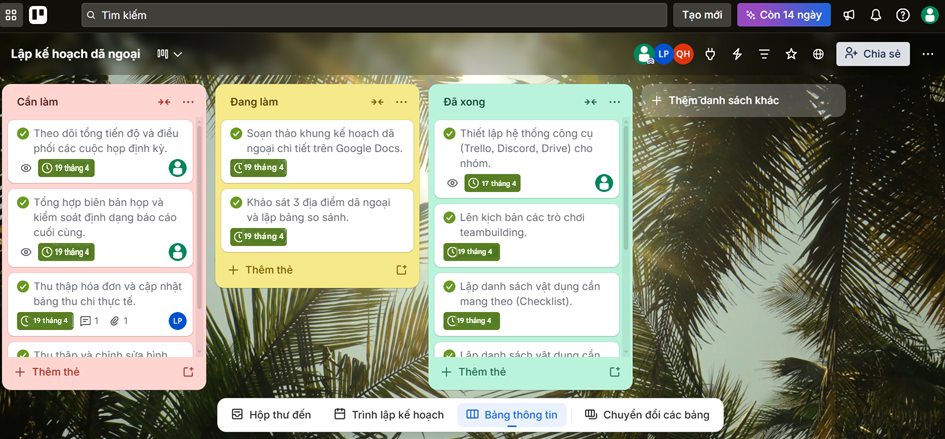
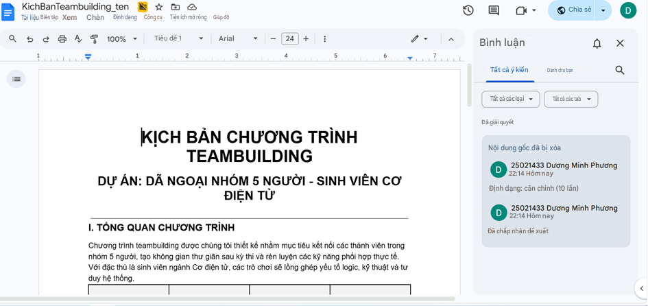

Quản Trị & Hợp Tác Trực Tuyến
Vận dụng hệ sinh thái công cụ số để tối ưu hóa quy trình làm việc, quản lý tiến độ và xử lý khủng hoảng thông tin trong dự án "Lập kế hoạch dã ngoại nhóm".
MÔ HÌNH VẬN HÀNH DỰ ÁN
Với vai trò Trưởng nhóm, tôi đã thiết lập luồng công việc tích hợp 3 trụ cột chính:
Điều phối & Tiến độ (Trello)
Ứng dụng phương pháp Kanban để chia nhỏ hạng mục. Mọi công việc được đưa vào các luồng "Cần làm - Đang làm - Đã xong", gán thẻ thành viên và thiết lập Deadline cụ thể, giúp toàn đội minh bạch hóa khối lượng công việc.
Giao tiếp & Đồng bộ (Discord)
Xóa bỏ tình trạng "trôi tin nhắn" thường gặp ở Zalo/Messenger bằng cách phân luồng server Discord thành các kênh riêng biệt: #thong-bao-chung, #ngan-sach, và kênh đàm thoại Voice để tổ chức các cuộc họp định kỳ.
Cộng tác & Lưu trữ (Google Workspace)
Sử dụng Google Drive làm kho dữ liệu tập trung (Single Source of Truth). Kết hợp Google Docs/Sheets để nhiều thành viên có thể soạn thảo kịch bản chương trình và dự trù kinh phí theo thời gian thực (Real-time).
📸 MINH CHỨNG QUÁ TRÌNH PHỐI HỢP
📄 Xem Full Báo Cáo Cá Nhân

🛠️ PHÂN TÍCH & XỬ LÝ SỰ CỐ
Làm việc nhóm trực tuyến luôn tiềm ẩn rủi ro về giao tiếp và đồng bộ dữ liệu. Dưới đây là các "khủng hoảng vi mô" đã phát sinh và cách tôi cùng nhóm xử lý triệt để:
Nhiều thành viên chỉnh sửa bảng tính Google Sheets cùng lúc gây ghi đè, nhầm lẫn số liệu thu chi.
Kích hoạt tính năng "Protect Sheets" để phân quyền sửa từng vùng dữ liệu. Ứng dụng "Version History" để khôi phục nhanh các bản ghi cũ bị lỗi.
Các quyết định chốt về thời gian, địa điểm tập kết bị trôi tuột trong các cuộc thảo luận dài trên kênh chat.
Kỷ luật hóa luồng thông tin: Sử dụng lệnh "Pin message" cho các quyết định cuối cùng, và tạo kênh chuyên biệt #thong-bao-chung (chỉ admin được chat) để phổ biến.
Một số nhiệm vụ hậu cần phụ (mua đồ ăn vặt, thuê bạt) bị chậm do thành viên lười mở Trello kiểm tra.
Sử dụng Automations: Tích hợp bot Trello trực tiếp vào Discord để tự động đẩy thông báo nhắc nhở (ping tag tên) trước 24h khi một task sắp đến hạn nộp.